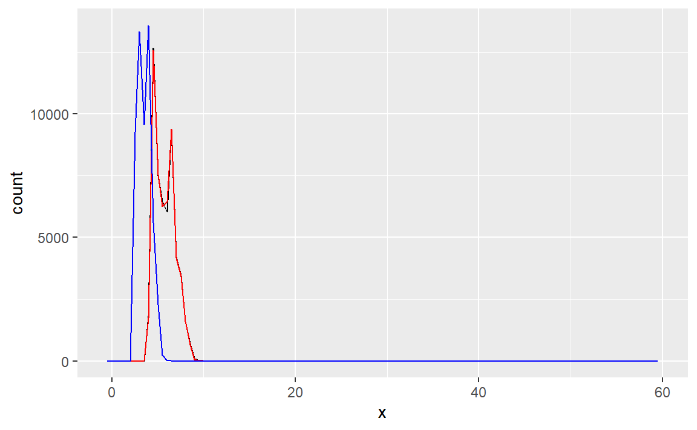
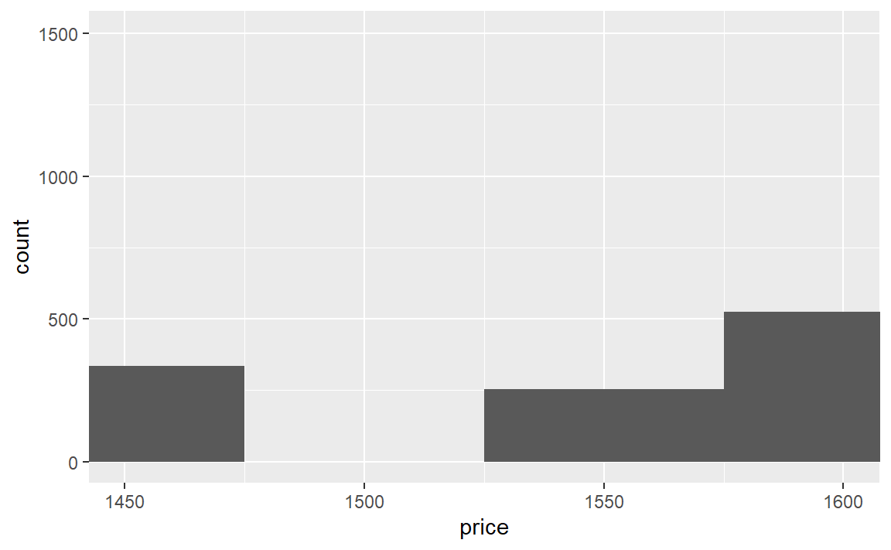
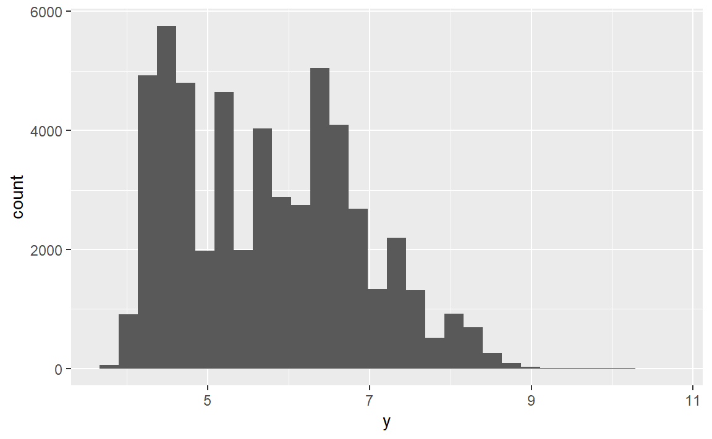
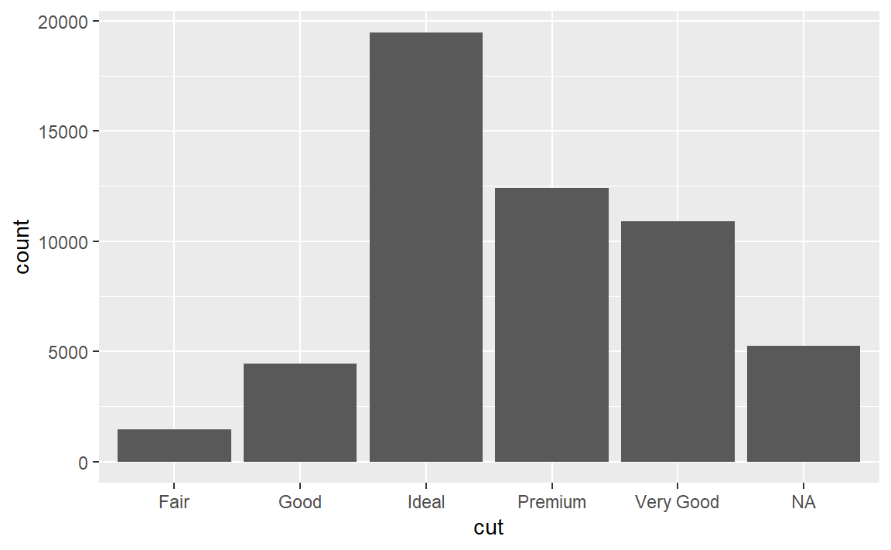

6 Exploratory Data Analysis
探索性数据分析（EDA）是一个天马行空的不断迭代循环的思考过程，主要作用：
对数据提出问题 。
对数据进行可视化、转换和建模，进而找出问题的答案。
使用上一个步骤的结果来精炼问题，并提出新问题。
6.1 两类问题
对于数据，我们可以粗略地提出两大类问题：
变量本身会发生何种变动？
不同变量之间会发生何种相关变动？
6.2 一些tips
使用带有异常值和不带异常值的数据分别进行分析，是一种良好的做法。如果两次分析的 结果差别不大，而你又无法说明为什么会有异常值，那么完全可以用缺失值替代异常值， 然后继续进行分析。但如果两次分析的结果有显著差别，那么你就不能在没有正当理由的 情况下丢弃它们。你需要弄清出现异常值的原因（如数据输入错误），并在文章中说明丢弃它们的理由。
6.3 练习
6.3.1 3-变动
(1)研究 x、y 和 z 变量在diamonds数据集中的分布。你能发现什么？思考一下，对于一条钻石数据，如何确定表示长、宽和高的变量？
利用直方图探究连续变量的变动：
diamonds %>%
ggplot()+
geom_freqpoly(aes(x), binwidth = 0.5,color="black")+
geom_freqpoly(aes(y), binwidth = 0.5,color="red")+
geom_freqpoly(aes(z), binwidth = 0.5,color="blue")
可以看到，x（长）和y（宽）变量在数据集中的分布高度一致，它们与z（高）变量的分布形状类似。
(2)研究price的分布，你能发现不寻常或令人惊奇的事情吗？（提示：仔细考虑一下binwidth参数，并确定试验了足够多的取值。）
利用直方图探究连续变量的变动，多次调整值发现：
diamonds %>%
ggplot()+
geom_histogram(aes(price),binwidth = 50)+
coord_cartesian(xlim = c(1450,1600))
在1475-1525区间中是没有数据的，好像是有点奇怪…
(3)0.99克拉的钻石有多少？1克拉的钻石有多少？造成这种区别的原因是什么？
diamonds %>%
filter(between(carat,0.99,1.01)) %>%
count(carat)
#> # A tibble: 3 x 2
#> carat n
#> <dbl> <int>
#> 1 0.99 23
#> 2 1 1558
#> 3 1.01 2242估计大多数0.99克拉的钻石都会被当作1克拉对外宣称…就像一些人身高168的说自己170一样…
6.3.2 4-缺失值
(1)直方图如何处理缺失值？条形图如何处理缺失值？为什么会有这种区别？
参考https://jrnold.github.io/r4ds-exercise-solutions/exploratory-data-analysis.html#exercise-7.4.1
diamonds2 <- diamonds %>%
mutate(y = ifelse(y < 3 | y > 20, NA, y))
ggplot(diamonds2, aes(x = y)) +
geom_histogram()
#> `stat_bin()` using `bins = 30`. Pick better value with `binwidth`.
#> Warning: Removed 9 rows containing non-finite values (stat_bin).
diamonds %>%
mutate(cut = if_else(runif(n()) < 0.1, NA_character_, as.character(cut))) %>%
ggplot() +
geom_bar(mapping = aes(x = cut))
直方图会丢弃NA值，条形图会把NA值作为一个取值。
(2)na.rm = TRUE在mean()和sum()函数中的作用是什么？
a <- c(1:5,NA,NA)
sum(a)
#> [1] NA
sum(a,na.rm = T)
#> [1] 15
mean(a)
#> [1] NA
mean(a,na.rm = T)
#> [1] 3求非NA值的和以及求非NA值的均值（分母为非NA值的个数）。